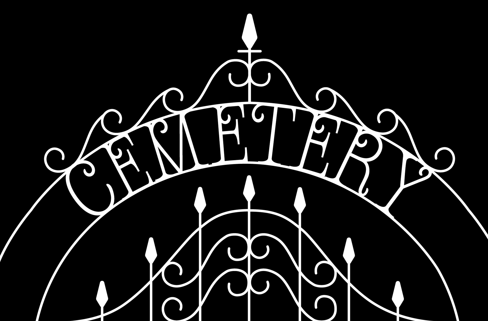
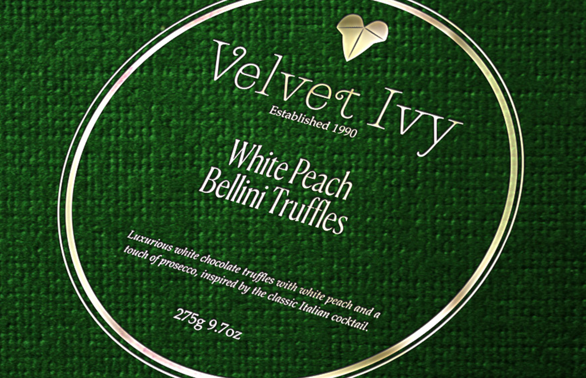
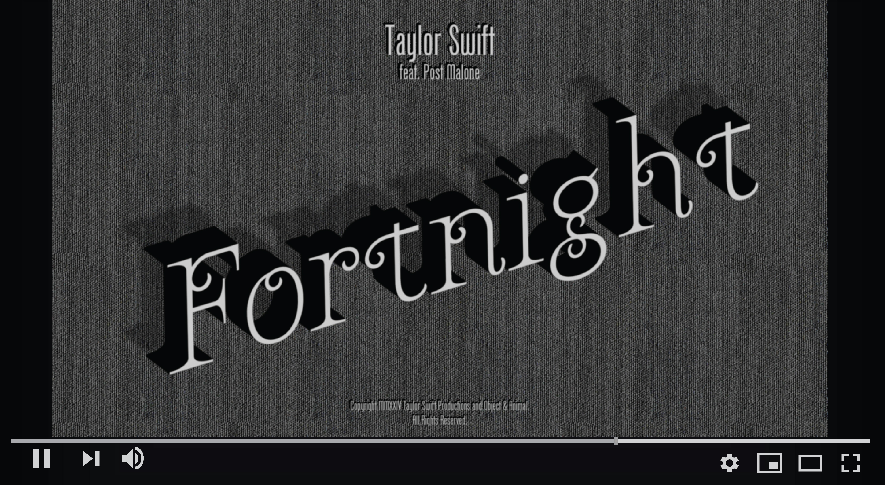
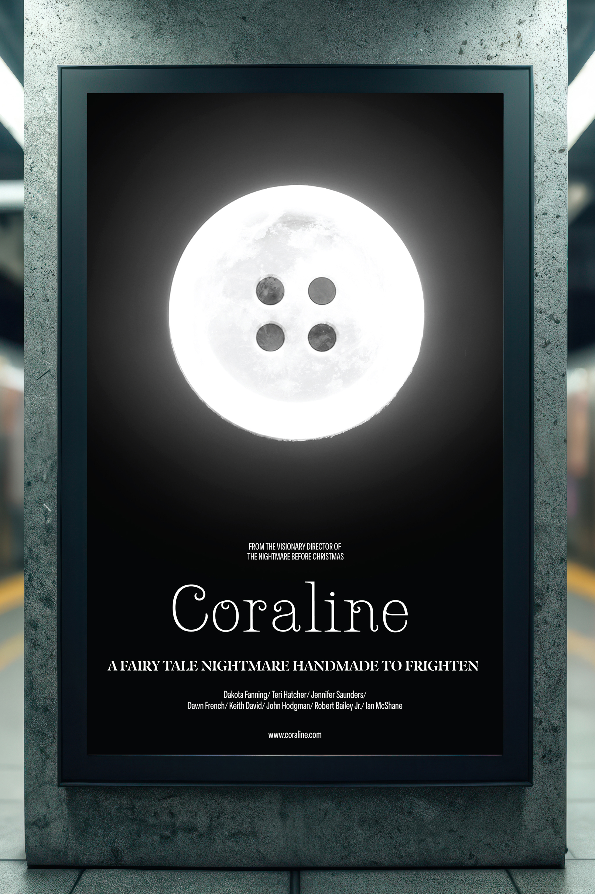

Cemetery
'Cemetery' is a custom typeface with long, pointed serifs and elegant scrollwork, with a consistent visual style across uppercase and lowercase letters, basic punctuation, and select dingbats.



